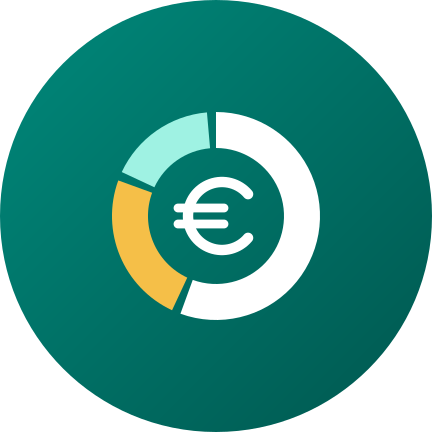

Track your income and expenses in seconds and see where your money goes. Clear Expenses is an Android app that works fully offline: your data is stored on your phone, with no accounts and no servers of its own.
Privacy policy · Contact: marrodanapps@gmail.com
Registra gastos e ingresos en segundos y analiza en qué se va tu dinero. Gastos Claros es una app Android que funciona sin conexión: tus datos se guardan en tu móvil, sin cuentas ni servidores propios.
Política de privacidad · Contacto: marrodanapps@gmail.com